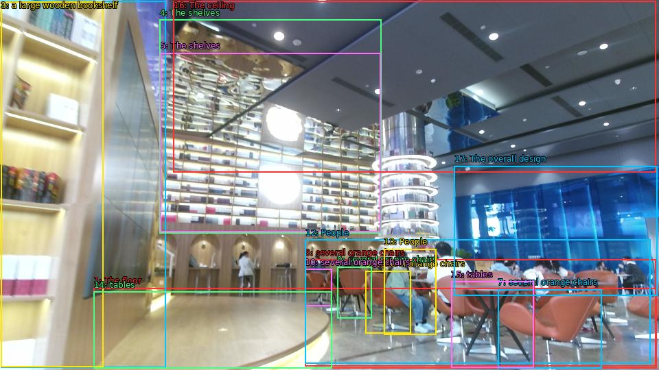

The image shows the interior of a modern library or bookstore. The floor is made of light-colored tiles and the walls are made of glass. On the left side of the image, there is a large wooden bookshelf with multiple rows of books neatly arranged on it. The shelves are filled with books of different sizes and colors. In the center of the room, there are several orange chairs and tables arranged in a semi-circle around a circular table. People are sitting at the tables and browsing the books. The ceiling is high and has recessed lighting, creating a warm and inviting atmosphere. The overall design of the space is modern and minimalistic.

Original · Caption raw · Grounding raw · Koordinate
Številke so lokalni ID regije. Dolge slikovne oznake so skrajšane; spodaj so celotne fraze. Napovedane regije se lahko prekrivajo ali opisujejo skupine.
| ID | Celotna fraza | bbox xyxy |
|---|---|---|
| 1 | The floor | [136.8000030517578, 420.3900146484375, 956.6399536132812, 537.030029296875] |
| 2 | a large wooden bookshelf | [1.4399999380111694, 1.8900001049041748, 241.4399871826172, 536.4900512695312] |
| 3 | a large wooden bookshelf | [1.4399999380111694, 2.430000066757202, 150.239990234375, 535.9500122070312] |
| 4 | The shelves | [232.79998779296875, 28.89000129699707, 555.3599853515625, 340.4700012207031] |
| 5 | The shelves | [233.75999450683594, 77.49000549316406, 554.3999633789062, 338.8500061035156] |
| 6 | several orange chairs | [444.0, 378.8100280761719, 955.6799926757812, 534.8699951171875] |
| 7 | several orange chairs | [725.2799682617188, 422.010009765625, 876.0, 537.030029296875] |
| 8 | several orange chairs | [532.3200073242188, 395.010009765625, 598.5599975585938, 486.27001953125] |
| 9 | several orange chairs | [491.03997802734375, 389.07000732421875, 541.9199829101562, 464.6700134277344] |
| 10 | several orange chairs | [444.0, 392.8500061035156, 483.3599853515625, 446.8500061035156] |
| 11 | tables | [657.1199951171875, 410.6700134277344, 778.0799560546875, 536.4900512695312] |
| 12 | People | [444.9599914550781, 349.6500244140625, 947.0399780273438, 530.010009765625] |
| 13 | People | [559.2000122070312, 363.1500244140625, 635.0399780273438, 488.97003173828125] |
| 14 | tables | [136.8000030517578, 425.7900085449219, 483.3599853515625, 537.5700073242188] |
| 15 | tables | [657.1199951171875, 410.6700134277344, 777.1199951171875, 536.4900512695312] |
| 16 | The ceiling | [252.95999145507812, 1.8900001049041748, 955.6799926757812, 251.91000366210938] |
| 17 | The overall design | [661.9199829101562, 242.19000244140625, 957.5999755859375, 431.7300109863281] |